1 · Quick start1 · 快速开始
One command, the default mode一条命令，跑默认模式
The default mode is scenario: N users holding independent conversations that grow turn by turn. It needs nothing but a running OpenAI-compatible endpoint and a tokenizer directory.
默认模式是 scenario：N 个用户各自进行不断增长的多轮会话。只需要一个正在运行的 OpenAI 兼容端点和一个 tokenizer 目录。
# pip
pip install "clawperf[agent,record,replay,mock-server]"
# or the container image (bundles examples/ and a local tokenizer)
docker pull ghcr.io/ucm-system/clawperf:latestclawperf --mode scenario \
--endpoint http://localhost:8000/v1 \
--model Qwen3-0.6B \
--tokenizer /mnt/model/Qwen3-0.6B \
--context-profile medium \
--num-users 8 --max-turns 20 \
--metrics-endpoint http://localhost:8000/metrics \
--output results.json
Use a local tokenizer directory. --tokenizer is loaded strictly offline (no hub lookup, no download) and drives exact token counting, context clamping and content generation. Point it at the same directory your server loaded the model from — or at the image's bundled /app/tokenizers/qwen3-0.6b to sanity-check the setup.
请使用本地 tokenizer 目录。--tokenizer 会严格离线加载（不查 hub、不下载），并负责精确分词、上下文裁剪与内容生成。指向服务端加载模型的同一个目录即可 —— 也可以先用镜像内置的 /app/tokenizers/qwen3-0.6b 验证环境是否正常。
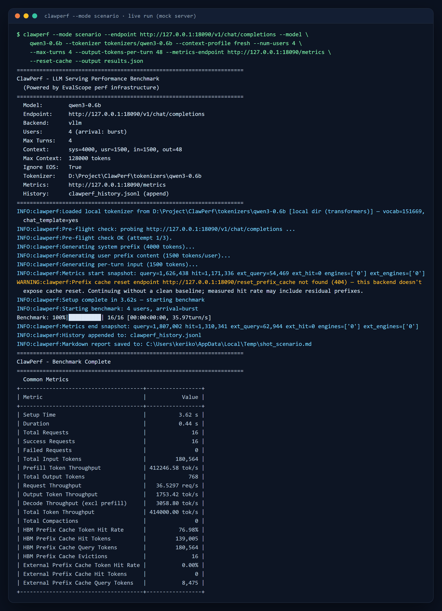
results.json and results.md.
运行中看到什么。横幅回显所有已解析的设置（包括生效的上下文档位），预检探针几秒内就能发现 endpoint/模型写错，然后是进度与总体指标。完整运行还会写出 results.json 与 results.md。
Reading the output怎么读输出
TTFT — time to first token; grows with context and concurrency. TPOT — per output token, the decode cost. E2E — full request latency. Hit rate — read from the server's Prometheus counters, not inferred.
TTFT —— 首 token 时延，随上下文与并发增长。TPOT —— 每输出 token 的解码成本。E2E —— 请求端到端时延。命中率 —— 直接读服务端 Prometheus 计数器，而非推断。
No GPU at hand?手边没有 GPU？
Ship the mock server instead: clawperf-mock-server --port 8000, then point --endpoint http://localhost:8000/v1 at it. It has a real trie prefix cache and vLLM-style /metrics, so every mode works end to end.
用内置 mock server 替代：clawperf-mock-server --port 8000，然后 --endpoint http://localhost:8000/v1。它带真实的字典树前缀缓存与 vLLM 风格 /metrics，所有模式都能跑通。
2 · Modes in depth2 · 模式详解
Pick the question you need answered按你要回答的问题选模式
Each mode writes a JSON result plus a Markdown report with a verdict. The table is the map; the sections below are the detail.
每种模式都会产出 JSON 结果与带结论的 Markdown 报告。下表是地图，下面是细节。
| Mode模式 | Question it answers回答什么问题 |
|---|---|
scenario | How does the stack behave under N concurrent growing conversations? (default mode)N 个并发增长会话下，服务表现如何？（默认模式） |
hitrate | Does the prefix cache actually deliver the hit rate I designed for?前缀缓存真的达到了我设计的目标命中率吗？ |
slo | What is the maximum concurrency that still meets my latency budget?满足时延预算的最大并发是多少？ |
agent | What does a real tool-calling agent cost in latency and tokens?真实工具调用 Agent 的时延与 token 成本是多少？ |
trace | How much reuse does my real session data contain, and what does it cost to replay?真实会话数据里有多少可复用前缀？回放它代价多大？ |
record · replay | Capture a live agent session (OpenAI or Anthropic clients) and replay it against any endpoint.把线上 Agent 会话（OpenAI 或 Anthropic 客户端）录下来，再回放到任意端点。 |
scenarioThe core agentic-load simulator核心 Agent 负载模拟器
Why: a coding agent does not send one prompt — it grows a conversation, reuses the same system prefix every turn, and several sessions run at once. A single-shot benchmark cannot see the prefill that accumulates turn by turn, so it reports a TTFT your users will never get. This mode models the conversation instead.
为什么做：编码 Agent 不会只发一次请求 —— 它让会话不断增长、每轮复用同一段系统前缀，并且多个会话并发。单次请求压测看不到逐轮累积的预填充量，于是给出一个用户永远拿不到的 TTFT。这个模式直接对「会话」建模。
How to run it怎么用clawperf --mode scenario \
--endpoint http://localhost:8000/v1 --model Qwen3-0.6B \
--tokenizer /mnt/model/Qwen3-0.6B \
--context-profile medium \
--num-users 8 --max-turns 20 --user-arrival poisson:2 \
--metrics-endpoint http://localhost:8000/metrics --reset-cache \
--output results_scenario.json--context-profile | Named context size: fresh 7K → xxl 392K. Sets the system prefix, per-user prefix and per-turn input at once. See §3.命名的上下文大小：fresh 7K → xxl 392K，一次性设定系统前缀、用户前缀与每轮输入。见 §3。 |
--num-users | Concurrent sessions.并发会话数。 |
--max-turns | Turns per session; history accumulates across them.每个会话的轮数；历史在这些轮之间累积。 |
--user-arrival | When sessions join: burst, steady:<s>, poisson:<λ>.会话加入时机：burst、steady:<秒>、poisson:<λ>。 |
--max-context-tokens | Where append-mode compaction triggers — set it to the model's real window.追加式压缩的触发阈值 —— 设为模型真实窗口。 |
--suite | Sweep several (users × profile) combinations in one command.一条命令扫完多组（并发 × 档位）。 |
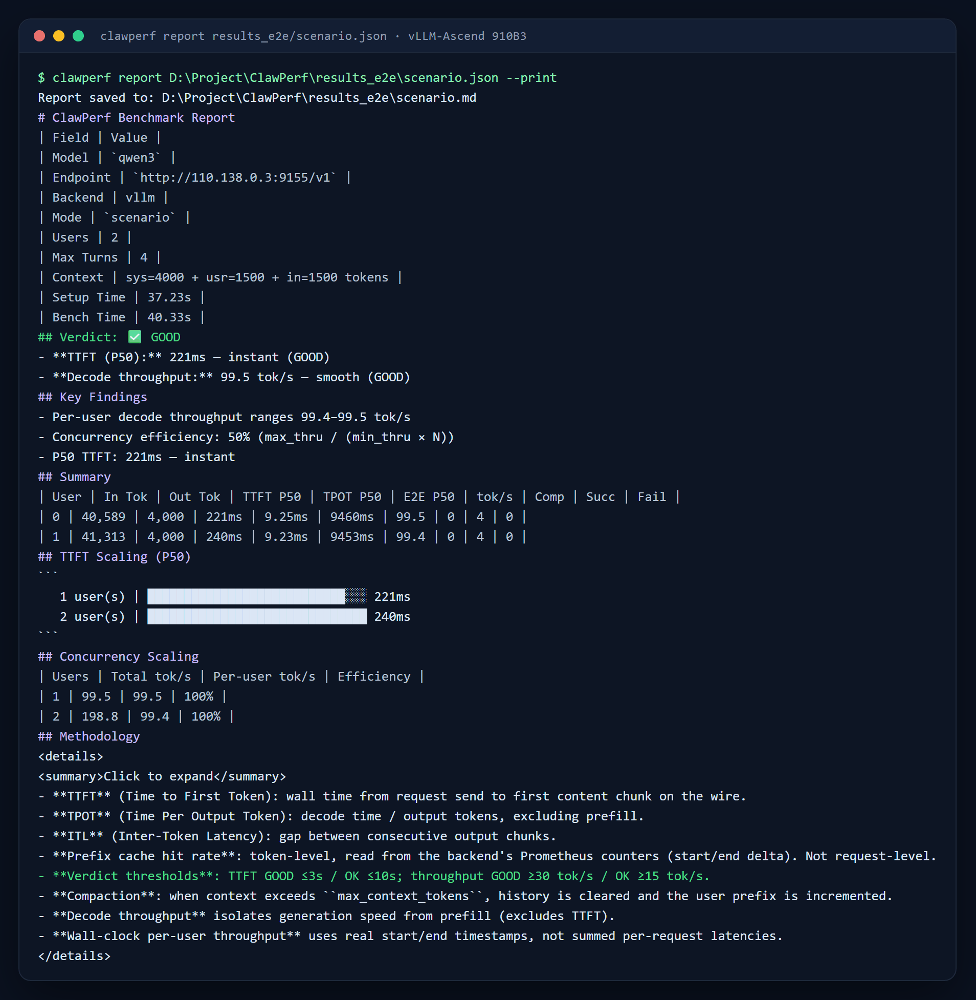
hitrateIs the prefix cache actually working?前缀缓存到底有没有生效？
Why: prefix caching is the single biggest lever on agent latency, and it is usually assumed rather than measured. This mode builds a workload with a known shared fraction, prefills it, then reads the real hit rate out of the server's own Prometheus counters — so "we enabled prefix caching" becomes a number you can put in a review.
为什么做：前缀缓存是 Agent 时延上最大的一根杠杆，但通常只是「假设生效」而没有被测量。这个模式构造一个已知共享比例的负载，先预填充，再从服务端自己的 Prometheus 计数器读出真实命中率 —— 于是「我们开了前缀缓存」变成一个可以写进评审的数字。
How to run it怎么用clawperf --mode hitrate \
--endpoint http://localhost:8000/v1 --model Qwen3-0.6B \
--tokenizer /mnt/model/Qwen3-0.6B \
--num-requests 200 --input-len 8192 --hit-rate 0.7 --prefix-num 4 \
--output-len 128 --concurrency 8 \
--metrics-endpoint http://localhost:8000/metrics --reset-cache \
--output results_hitrate.json--hit-rate | Target shared fraction 0..1; derives the prefix length. Mutually exclusive with --prefix-len.目标共享比例 0..1，用于反推前缀长度；与 --prefix-len 互斥。 |
--input-len | Total prompt length = shared prefix + boundary + unique suffix.提示词总长度 = 共享前缀 + 边界 + 各自独有的后缀。 |
--prefix-num | How many distinct prefixes are in play — this is what makes it multi-tenant.有多少个不同前缀 —— 这正是多租户感的来源。 |
--num-requests | Measure-phase request count.测量阶段的请求数。 |
--no-prefill | Skip the prefill phase to measure cold-cache behaviour.跳过预填充阶段，测冷缓存表现。 |
--reset-cache | Evict the cache first so residual traffic doesn't inflate the result.先清空缓存，避免残余流量抬高结果。 |
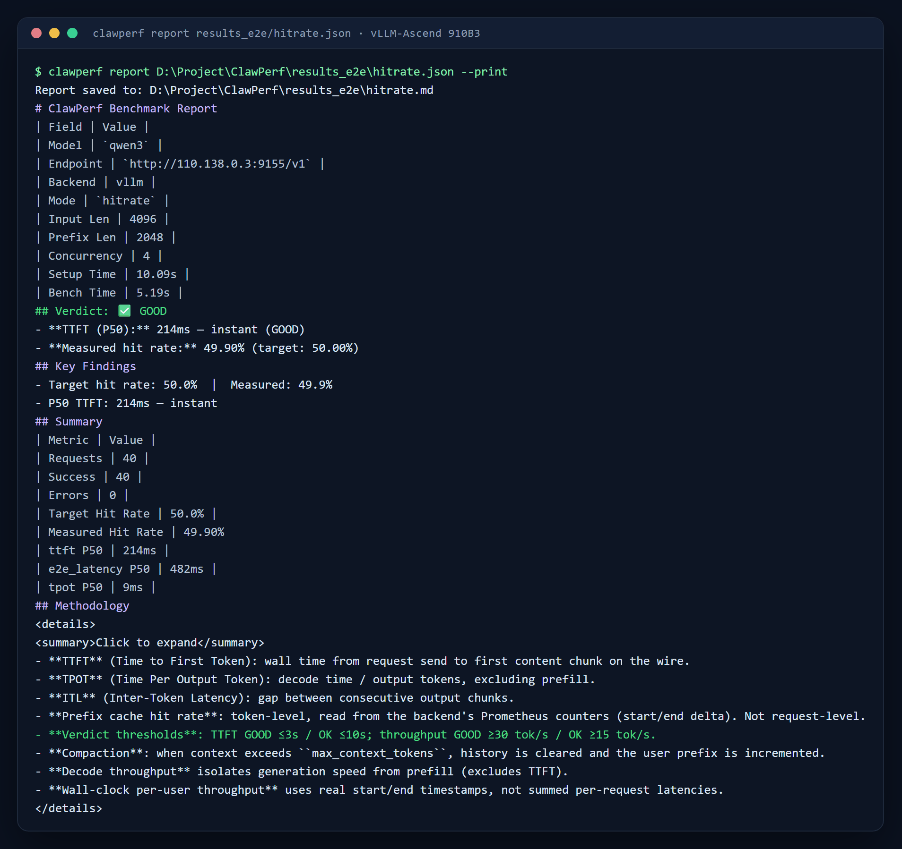
1/(1-hit) against the speedup actually observed, and a per-engine breakdown so you can see which instance is serving the reuse.
目标 vs 实测、理论上限 1/(1-命中率) 与真实观测到的加速比，以及逐引擎明细 —— 可以看出复用发生在哪个实例。
sloTurn latency budgets into a capacity number把时延预算变成容量数字
Why: "how many users can this box serve?" is the question every capacity plan needs, and it is not answered by a single load level. This mode raises concurrency step by step, evaluates every constraint at each level, and stops at the first one that breaks — naming which constraint broke it.
为什么做：「这台机器能支撑多少用户」是每个容量规划都要回答的问题，而单个负载档位答不了。这个模式逐级提高并发，在每一级评估全部约束，并在第一个被打破的档位停下 —— 并指出是哪条约束先破的。
How to run it怎么用# ':' means '<=' and needs no quoting — see the note below
clawperf --mode slo \
--endpoint http://localhost:8000/v1 --model Qwen3-0.6B \
--tokenizer /mnt/model/Qwen3-0.6B \
--slo ttft.p99:1500 --slo tpot.avg:30 --slo e2e.max:30000 \
--slo-min-users 1 --slo-max-users 200 --slo-step-strategy geometric \
--slo-step-turns 5 --slo-error-rate 0.01 \
--output results_slo.json
Shell safety. < and > are redirections to bash, so an unquoted --slo ttft.p99<=10000 makes the shell read a file called =10000 and ClawPerf never starts. Write --slo ttft.p99:10000 (no quotes needed), --slo 'ttft.p99<=10000', or --slo ttft.p99:ge:10000 for >=. Metrics: ttft/tpot/e2e; aggregates: avg, min, max, any percentile.
Shell 安全。< 和 > 对 bash 来说是重定向符号，所以不加引号的 --slo ttft.p99<=10000 会让 shell 去读名为 =10000 的文件，ClawPerf 根本不会启动。请写成 --slo ttft.p99:10000（无需引号）、--slo 'ttft.p99<=10000'，或 --slo ttft.p99:ge:10000 表示 >=。指标：ttft/tpot/e2e；统计量：avg、min、max 及任意分位。
--slo | Repeatable constraint <metric>.<agg><sep><ms>; all constraints AND together.可重复的约束 <指标>.<统计量><分隔符><毫秒>；多条之间为「与」关系。 |
--slo-min-users · --slo-max-users | The range the sweep may cover.扫描覆盖的范围。 |
--slo-step-strategy | geometric doubles each step; linear walks one level at a time.geometric 每步翻倍；linear 逐级递增。 |
--slo-step-turns | Measured turns per user at each level (plus --slo-step-warmup-turns).每一级每个用户参与测量的轮数（另有 --slo-step-warmup-turns 预热轮）。 |
--slo-error-rate | Extra pass condition on the error fraction.额外的错误率达标条件。 |
--slo-step-timeout-s | Wall-clock budget per level; an overrun counts as TIMEOUT and fails.每级的墙钟预算；超时记为 TIMEOUT 并判定不达标。 |
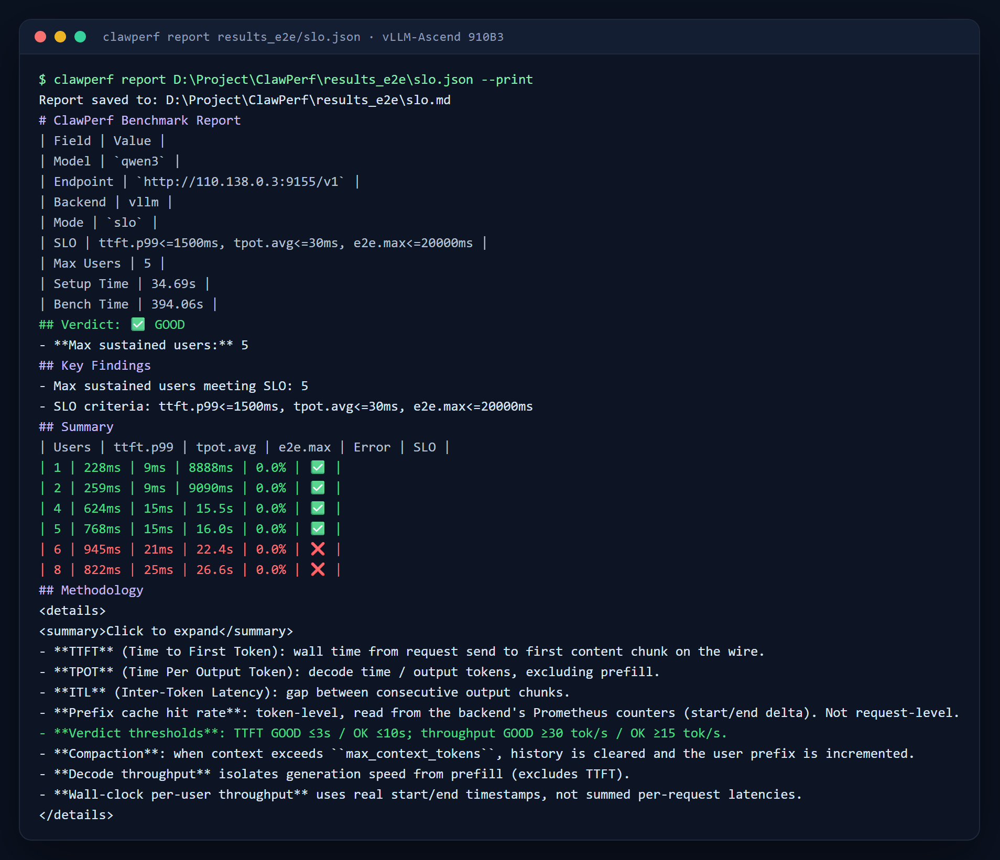
e2e.max, which a TTFT-only test would have missed entirely.
真机扫描：每条约束一列，给出结论与答案 —— 这台机器是 5 个用户。真正的瓶颈是 e2e.max，只看 TTFT 的测试会完全漏掉它。
agentLet the model actually work让模型真的干活
Why: synthetic prompts are a guess at what agents send. In this mode the model under test really calls functions — reading files, editing them, running shell commands — so the traffic has the shape of agent work: bursty tool loops, long growing histories, and a task that either completes or does not.
为什么做：合成提示词只是对 Agent 流量的猜测。这个模式让被测模型真的调用工具 —— 读文件、改代码、执行 shell —— 于是流量具备 Agent 工作的形态：突发的工具循环、不断增长的长历史，以及「任务完成或没完成」这个结果。
How to run it怎么用clawperf --mode agent \
--endpoint http://localhost:8000/v1 --model Qwen3-0.6B \
--tokenizer /mnt/model/Qwen3-0.6B \
--agent-tasks 8 --agent-max-steps 12 --agent-max-tokens 512 \
--agent-shell-timeout 30 \
--output results_agent.json
Needs an endpoint with tool calling enabled. For vLLM that means --enable-auto-tool-choice --tool-call-parser qwen3_xml (the parser name depends on the model family).
需要开启工具调用的端点。vLLM 需要 --enable-auto-tool-choice --tool-call-parser qwen3_xml（解析器名称随模型系列而定）。
--agent-tasks | How many coding tasks run concurrently.并发运行的编码任务数。 |
--agent-max-steps | Tool-calling steps allowed per task before it is cut off.每个任务在被截断前允许的工具调用步数。 |
--agent-max-tokens | Generated tokens per model call inside a task.任务内每次模型调用的生成 token 上限。 |
--agent-shell-timeout | Seconds a single shell command may take.单条 shell 命令允许的最长秒数。 |
--agent-task-file | Bring your own tasks instead of the built-in presets.用自定义任务替代内置任务集。 |
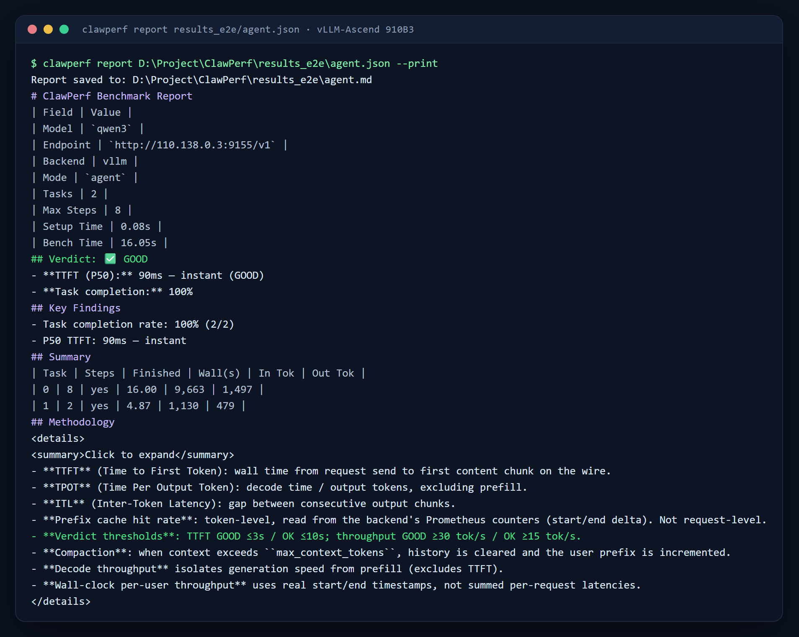
traceUse your own traffic as the workload用你自己的流量当负载
Why: every simulated workload is a guess about your traffic; a production trace is not. This mode replays a real trace's block hashes through a simulated cache to measure achievable reuse and the hit-rate-vs-budget curve — no endpoint needed — and can then send the trace's actual requests to your endpoint to measure what that workload really costs.
为什么做：任何模拟负载都是对你流量的猜测，而生产 trace 不是。这个模式把真实 trace 的 block hash 送进模拟缓存，测出可达复用率与「命中率-预算」曲线（不需要端点）；随后还能把 trace 里的真实请求发到你的端点，测出这份负载的真实代价。
How to run it怎么用# simulation only — no endpoint needed
clawperf --mode trace --trace-file trace.jsonl.gz \
--budget-sweep --eviction-policy lru
# simulation + real replay, clamped to the model window
clawperf --mode trace --trace-file trace.jsonl.gz \
--endpoint http://localhost:8000/v1 --model Qwen3-0.6B \
--tokenizer /mnt/model/Qwen3-0.6B \
--cache-budget-gb 40 --kv-bytes-per-token 2.0 \
--model-context-length 32768 --trace-users 4 \
--output results_trace.json--trace-file | kvcache.ai JSONL ({hash_ids, input_length, block_size?}), optionally gzipped, or - for stdin.kvcache.ai 格式 JSONL（{hash_ids, input_length, block_size?}），可 gzip，或用 - 从标准输入读。 |
--budget-sweep | Scan several cache sizes to find where returns flatten.扫描多个缓存容量档位，找出收益拐点。 |
--cache-budget-tokens · --cache-budget-gb | Fixed budget in tokens, or in GB via --kv-bytes-per-token.固定预算，按 token 或按 GB（配合 --kv-bytes-per-token）。 |
--eviction-policy | lru or fifo.lru 或 fifo。 |
--trace-users | Session-level concurrency when the trace carries user/session ids.trace 带用户/会话标识时的会话级并发。 |
--model-context-length | Clamps replay output length; requests that cannot fit are skipped with a reason.裁剪回放的输出长度；放不下的请求会带原因跳过。 |
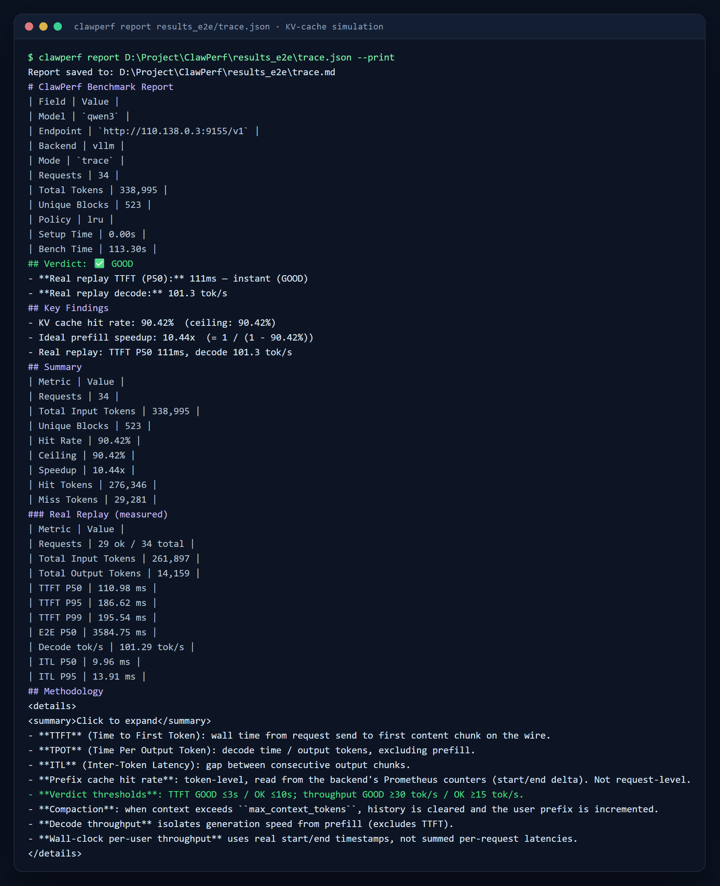
record & replayCapture once, replay anywhere录一次，随处回放
Why: the most convincing benchmark is your own session. Point a real agent (Claude Code, any OpenAI or Anthropic client) at the recording proxy while you work; afterwards you can replay that exact session against any endpoint — before and after a config change, or between two vendors — with the KV-cache prefix aligned the way it was live.
为什么做：最有说服力的基准就是你自己的会话。工作时把真实 Agent（Claude Code 或任意 OpenAI/Anthropic 客户端）指向录制代理，之后就能把这段会话原样回放到任意端点 —— 改配置前后对比、两家供应商对比 —— 并且 KV 缓存前缀与当时一致。
How to run it怎么用# terminal 1 — record (accepts /v1/chat/completions and /v1/messages)
clawperf --mode record --proxy-port 9090 \
--upstream-endpoint https://api.example.com/v1 --upstream-api openai \
--recording session.jsonl
# … point your agent at http://localhost:9090/v1, work, then Ctrl+C
# terminal 2 — replay it against any endpoint
clawperf --mode replay --recording session.jsonl \
--endpoint http://localhost:8000/v1 --model Qwen3-0.6B \
--tokenizer /mnt/model/Qwen3-0.6B \
--history-mode live --concurrency 4 \
--output results_replay.json--recording | The JSONL file to write (record) or read (replay). Appends across restarts and tells you what it kept.写入（record）或读取（replay）的 JSONL 文件；跨重启追加，并提示保留了多少历史。 |
--upstream-endpoint · --upstream-api | Where the proxy forwards to, and in which dialect (Anthropic is translated on the fly).代理转发到哪里、用哪种协议（Anthropic 会被实时翻译）。 |
--history-mode | live feeds real responses into the next turn (prefix-aligned); verbatim replays recorded messages as-is for A/B.live 把真实返回作为下一轮历史（前缀对齐）；verbatim 原样回放录制内容，适合 A/B。 |
--concurrency | In-flight requests during replay.回放时的在途请求数。 |
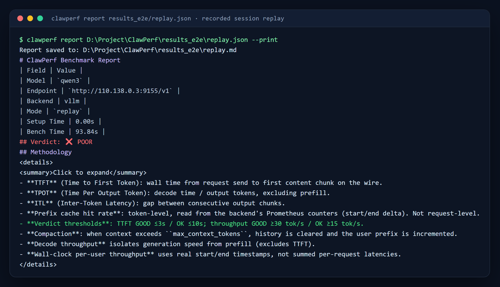
More captures更多截图
The result tables behind those reports, and the diagnostic you will meet first if you copy an SLO example without quotes.
报告背后的结果明细表，以及不加引号复制 SLO 示例时最先遇到的报错提示。
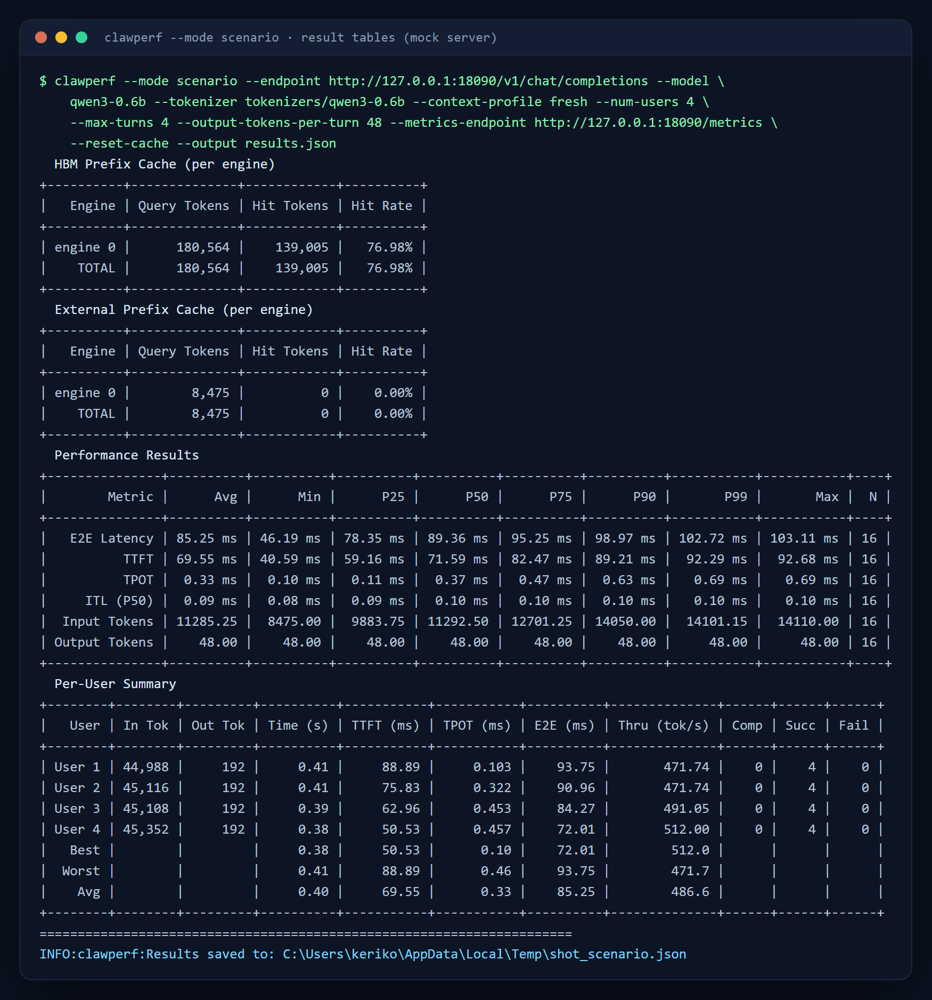
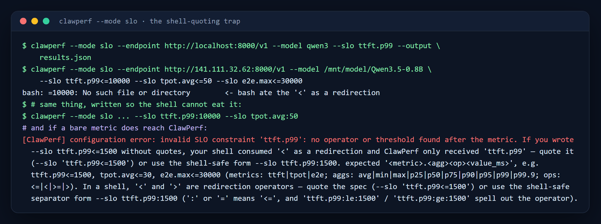
<=10000 as a redirection; --slo ttft.p99:10000 needs no quoting at all, and if a bare metric does reach ClawPerf it tells you exactly what happened.
shell 引号陷阱与解法。不加引号时 bash 把 <=10000 当重定向；--slo ttft.p99:10000 完全不需要引号，而裸指标名真的传进来时 ClawPerf 会明确告诉你发生了什么。
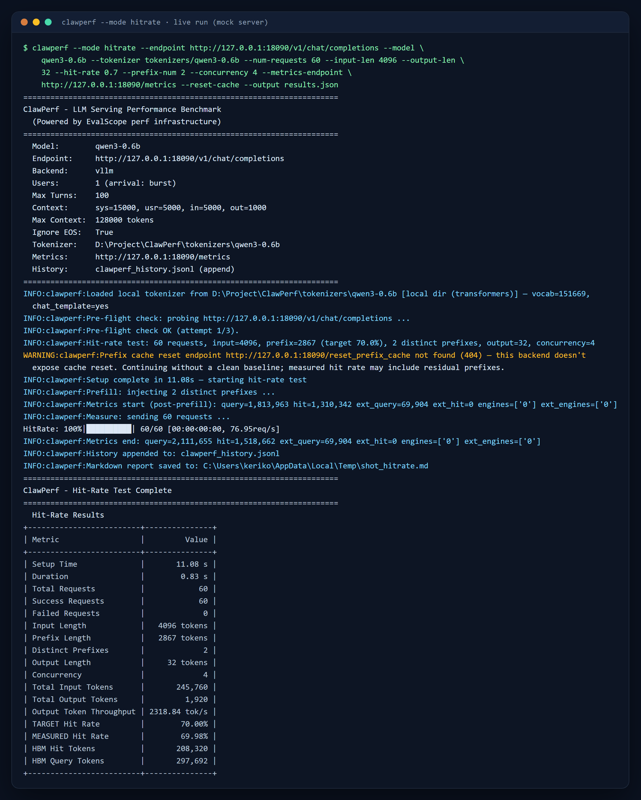
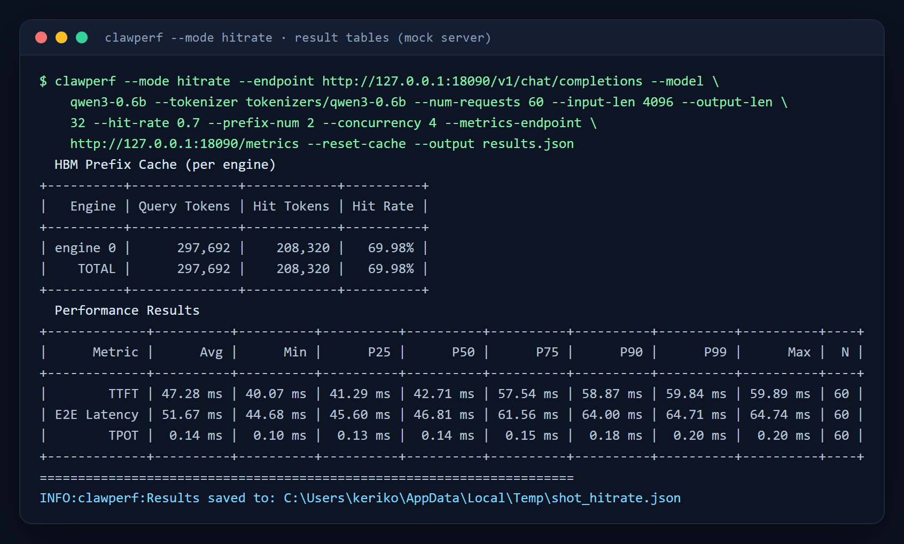
3 · Configuration3 · 配置
The knobs you will actually touch你真正会动的几个旋钮
Everything else — all 73 parameters, their defaults and accepted values — is in the reference, generated from clawperf --help.
其余全部内容 —— 73 个参数、默认值与可选值 —— 都在完整参考里，由 clawperf --help 自动生成。
Context profiles — the whole set上下文档位 —— 全部档位
A profile sets the shared system prefix, the per-user prefix and the per-turn input at once, so you do not have to invent token counts.
一个档位同时设定共享系统前缀、每用户前缀与每轮输入三个数字，免去自己拼 token 数。
| Profile档位 | system prefix系统前缀 | user prefix用户前缀 | input / turn每轮输入 | base context基础上下文 |
|---|---|---|---|---|
fresh | 4,000 | 1,500 | 1,500 | 7K — smoke test冒烟测试 |
short | 14,000 | 5,000 | 3,000 | 22K — short chat, a few tool calls短对话 + 少量工具调用 |
medium | 28,000 | 10,000 | 5,000 | 43K — typical coding session典型编码会话 |
long | 50,000 | 18,000 | 7,000 | 75K — many files + history多文件 + 长历史 |
full | 72,000 | 25,000 | 8,000 | 105K — approaching a 100K window接近 100K 窗口 |
xl | 150,000 | 45,000 | 10,000 | 205K — prefill stress预填充压力 |
xxl | 300,000 | 80,000 | 12,000 | 392K — near the largest windows接近最大窗口 |
Suites run the (users × profile) cross-product in sequence and write one result file per scenario: quick (3 user counts × fresh), standard (4 × medium+long), full (6 × fresh→full), hitrate (1 × fresh→full). --model-context-length skips any profile that cannot fit the model window.
套件会按序跑完（并发 × 档位）的笛卡尔积，每个场景各写一份结果文件：quick（3 个并发档 × fresh）、standard（4 × medium+long）、full（6 × fresh→full）、hitrate（1 × fresh→full）。--model-context-length 会跳过放不进模型窗口的档位。
Pacing & concurrency — four knobs, easy to confuse节奏与并发 —— 四个容易混淆的旋钮
| Knob旋钮 | Controls控制什么 | Semantics语义 |
|---|---|---|
--user-arrival | when each session joins每个会话何时加入 | users then run their turns back-to-back加入后各自连续跑自己的轮次 |
--concurrency | closed loop: in-flight request cap闭环：在途请求上限 | the next request starts when one finishes — the server throttles the load上一个返回才发下一个 —— 节奏由服务端决定 |
--request-rate | open loop: issue rate in req/s开环：每秒发送速率 | released on a Poisson schedule regardless of completions — this one can overload a server按泊松过程发送，与是否完成无关 —— 只有它会真正压垮服务端 |
--trace-users | session-level concurrency for trace replaytrace 回放的会话级并发 | turns inside one session stay ordered同一会话内的轮次保持有序 |
Metrics: one endpoint per instance指标：每个实例一个端点
PD-disaggregated and multi-replica services expose one /metrics per instance. Pass them all: counters are summed into a fleet-wide view, ratio gauges averaged, and the per-engine table gains one row per instance.
PD 分离与多副本服务每个实例各暴露一个 /metrics。全部传进来即可：计数器求和成全局视图、比率类指标取均值、逐引擎表按实例分行。
clawperf --mode scenario \
--endpoint http://lb:9000/v1 --model Qwen3-0.6B \
--tokenizer /mnt/model/Qwen3-0.6B \
--metrics-endpoint prefill=http://10.0.0.1:9101/metrics \
--metrics-endpoint decode=http://10.0.0.2:9102/metrics \
--reset-cache4 · Measured on real hardware4 · 真机实测
Measured, not claimed实测数据，而非宣传
From the end-to-end run in docs/E2E_TEST_REPORT.md: vLLM-Ascend v0.23.0, Qwen3-0.6B, one Ascend 910B3, driven from a Windows client.
数据来自 docs/E2E_TEST_REPORT.md 的端到端测试：vLLM-Ascend v0.23.0 + Qwen3-0.6B，单张昇腾 910B3，客户端为 Windows。
Hit rate is verifiable命中率可验证
49.90% measured against a 50.00% target — 40 requests, 2 distinct prefixes, concurrency 4, cache reset first.
目标 50.00%，实测 49.90% —— 40 个请求、2 个不同前缀、并发 4，先重置缓存。
Real traces reuse a lot真实 trace 复用率很高
90.42% prefix-reuse ceiling over 34 real Claude Code requests (3 sessions); replay of the fitting requests succeeded 29/29.
34 个真实 Claude Code 请求（3 个会话）的复用上限 90.42%；可容纳的请求回放 29/29 成功。
Capacity is a number容量是一个确定的数
5 users sustained with ttft.p99≤1500ms, tpot.avg≤30ms, e2e.max≤20s — the binding constraint was end-to-end max, which TTFT alone would have missed.
在 ttft.p99≤1500ms、tpot.avg≤30ms、e2e.max≤20s 下可稳定支撑 5 个用户 —— 真正的约束是端到端最大值，只看 TTFT 会误判。
TTFT scales with concurrency (fresh profile, 10 turns/user)TTFT 随并发增长（fresh 档位，每用户 10 轮）
130/130 turns succeeded across the whole suite, with no errors at 8 concurrent sessions.
整套 suite 130/130 轮全部成功，8 并发会话下零错误。
PD-disaggregated / multi-instance metricsPD 分离 / 多实例指标聚合
Two vLLM instances behind a round-robin proxy, one benchmark run, metrics aggregated per instance:
两个 vLLM 实例 + 轮询代理，一次压测、按实例聚合指标：
| Engine | Query tokens | Hit tokens | Hit rate |
|---|---|---|---|
engine prefill:0 | 41,427 | 27,520 | 66.43% |
engine decode:0 | 40,287 | 26,752 | 66.40% |
| TOTAL | 81,714 | 54,272 | 66.42% |
Round-robin across two instances with independent caches cost only a duplicate cold fill (47.41% vs a 50% target) — prefix caches are content-addressed and fill lazily.
两个实例各自缓存、轮询路由只多付一次冷启动代价（目标 50%、实测 47.41%）—— 前缀缓存按内容寻址、按需填充。
5 · Where it fits5 · 适用场景
Works with your stack与你的技术栈配合
Backends推理后端
vLLM, SGLang, MindIE and vllm-ascend. Metrics mapping is per backend, and multi-engine / multi-instance counters are handled.
vLLM、SGLang、MindIE、vllm-ascend。指标映射按后端区分，并支持多引擎 / 多实例计数器。
Trace formatsTrace 格式
trace-convert reads Claude Code sessions, ShareGPT/Hermes conversations and OpenAI message exports; UTF-8 BOM files are fine.
trace-convert 支持 Claude Code 会话、ShareGPT/Hermes 对话、OpenAI messages 导出；带 BOM 的文件也能读。
No GPU? Mock server没有 GPU？用 mock server
clawperf-mock-server is a fake endpoint with a trie prefix cache and vLLM-style /metrics — CI verifies hit-rate targets end to end against it.
clawperf-mock-server 提供带字典树前缀缓存与 vLLM 风格 /metrics 的假端点 —— CI 会用它端到端验证命中率目标。
CI-friendly exit codes适合 CI 的退出码
0 ok · 1 config error · 2 all requests failed · 3 interrupted. Configuration mistakes print one actionable line instead of a traceback.
0 正常 · 1 配置错误 · 2 全部请求失败 · 3 被中断。配置错误只打印一行可行动的提示，而不是堆栈。
Three subcommands三个子命令
clawperf report results.json regenerates the Markdown report, clawperf compare a.json b.json diffs two runs, clawperf trace-convert imports external trace datasets.
clawperf report results.json 重新生成 Markdown 报告，clawperf compare a.json b.json 对比两次运行，clawperf trace-convert 导入外部 trace 数据集。
Release pipeline发布流水线
Tagging vX.Y.Z builds the wheel, sdist, and native amd64/arm64 images, pushes to ghcr.io and attaches offline tarballs to the release.
打 vX.Y.Z tag 即自动构建 wheel、源码包与原生 amd64/arm64 镜像，推送到 ghcr.io 并把离线镜像包附到 Release。